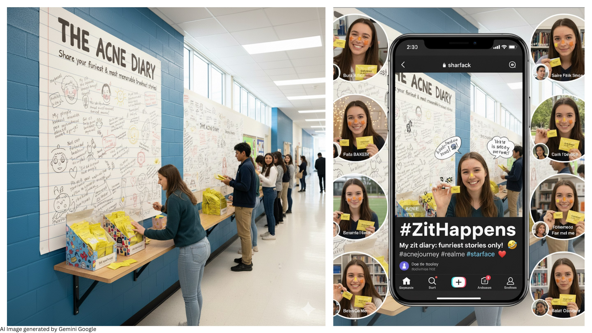
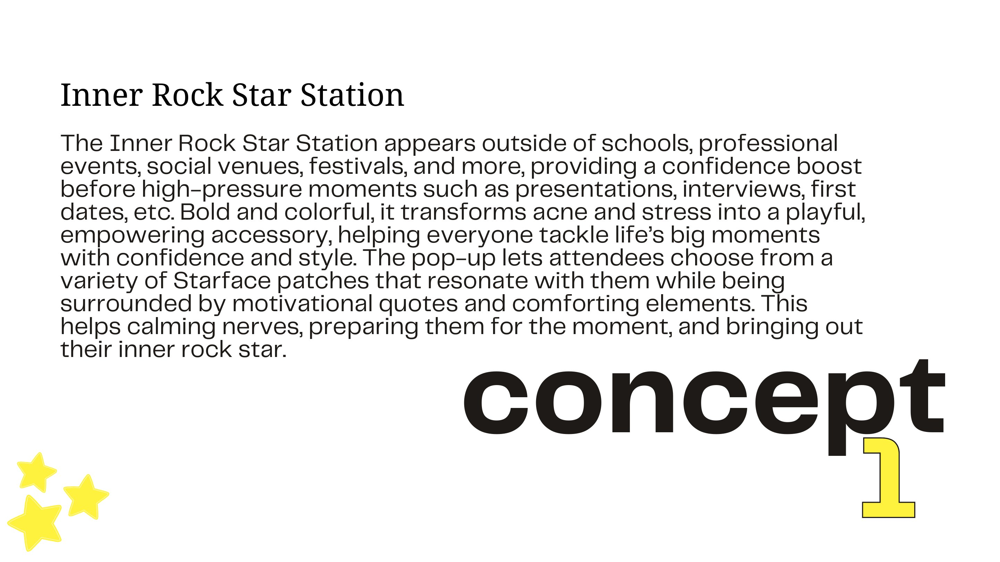
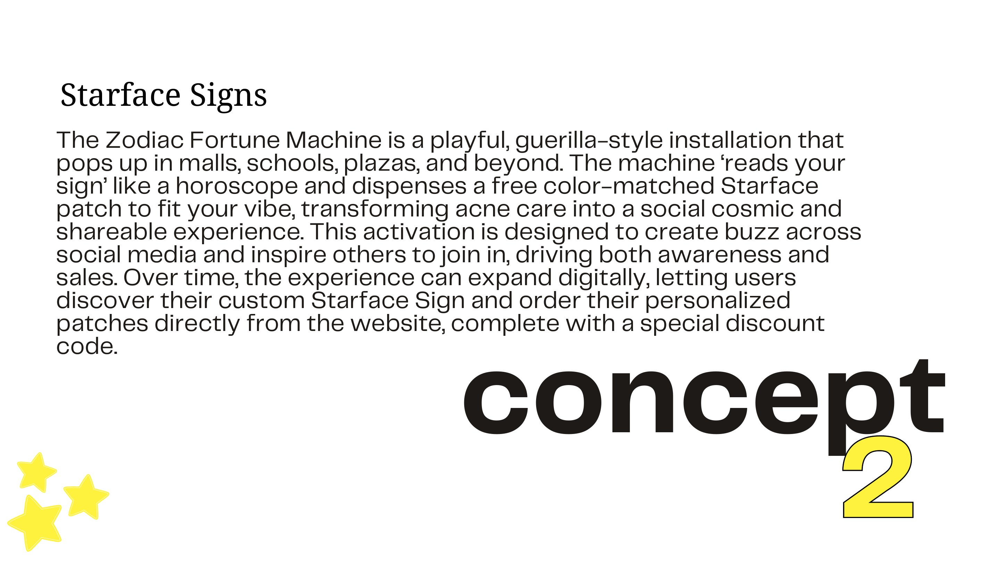

Starface
Three public experiences that turn breakout anxiety into playful expression.

Move confidence beyond the bathroom mirror.
Starface already reframes acne care as color, choice and self-expression. The next step was to give that optimism a public, participatory form before the moments when confidence matters most.

Inner Rock Star Station.
A bold pop-up outside schools, interviews, festivals and social venues lets people choose patches, absorb motivational prompts and turn pre-event nerves into a visible confidence ritual.
Starface Signs.
A zodiac fortune machine reads a visitor's sign, dispenses a color-matched patch and extends online through personalized recommendations and discount codes—making acne care cosmic, social and collectible.

The Acne Diary.
An oversized notebook wall invites people to write or draw memorable breakout stories in exchange for patches, transforming awkward private moments into a funny collective record and shareable social trend.
From thought
to touchpoint.
- Three activation platforms
- Pop-up experience
- Guerilla installation
- Participation mechanics
- Social extensions
“Starface is strongest when the patch is not the end product—it is permission to participate without hiding.”